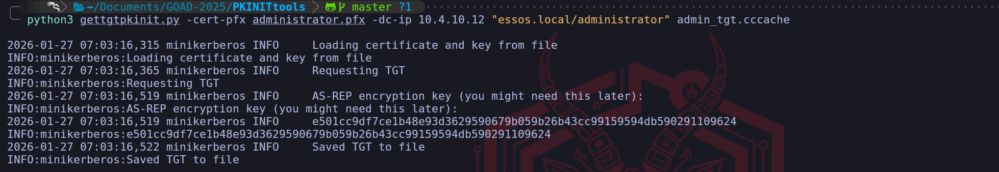
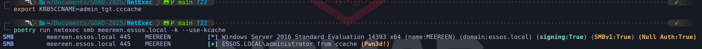
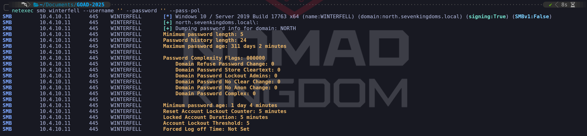

GOAD - part 3 - Authenticated Enumeration
We have successfully crossed the most difficult threshold in any Active Directory engagement which is the transition from an unauthenticated outsider to a recognized security principal. By securing our first set of valid credentials through our previous exploitation of Kerberos and SMB weaknesses, we have moved into the "Insider Threat" territory of the engagement. Part 3 is dedicated to Enumeration With a Valid User, a phase where our primary objective is to peel back the layers of the SevenKingdoms forest from an authenticated perspective. Having a valid domain account essentially turns the lights on within the network, allowing us to perform queries that are strictly forbidden to anonymous actors. During this stage of the operation, we are shifting our focus from discovering "who" exists in the domain to understanding exactly "how" the domain is built and governed. An authenticated user has the inherent right to query the Global Catalog and the LDAP service for a massive amount of metadata regarding every user, group, and computer object in the forest. While our initial reconnaissance was limited by defensive hurdles like anonymous bind restrictions, we can now speak directly to the directory. We will use this access to extract a definitive map of the environment, identifying not just account names but their roles, their login history, and their descriptive metadata which often hides critical administrative context. Our strategy for Part 3 is a comprehensive blend of industry-standard enumeration and specialized manual techniques. While we will cover the foundational attacks such as dumping DNS zones and roasting service accounts for their hashes, we are expanding our scope to include deeper analytical pivots. We aren't just looking for the next account to compromise, we are looking for the relationships and trust boundaries that define the environment. This means performing forest-wide lookups to see how the North, Essos, and the SevenKingdoms root interact, and identifying which groups from one domain might have unintended administrative rights in another. We will leverage a purely Linux-based arsenal to achieve this, relying on high-fidelity tools to weaponize our current credentials. A central component of this phase is the utilization of BloodHound, which will allow us to visualize the environment as a graph. As an authenticated user, we can ingest thousands of object relationships to identify "hidden" attack paths, such as nested group memberships or delegated permissions on Group Policy Objects. We treat this part of the guide as a Masterclass in domain visibility, where we turn a single low-privilege credential into a complete, actionable roadmap for total domain compromise. We are now in a position where the domain itself will provide the information we need to facilitate our own lateral movement and eventual privilege escalation.Enumerating Domain Users
We have secured our initial foothold, and while our previous reconnaissance gave us a skeleton list of usernames, we must now leverage our authenticated session to flesh out the entire directory structure. It is essential to understand that this massive intake of information is possible because of a fundamental and often surprising built-in design philosophy of Active Directory that every beginner must master, by default, the Authenticated Users group has "Read" access to almost the entire directory. In a professional Red Team engagement, we capitalize on this default permission model immediately. The Authenticated Users group includes every user, service account, and computer account in the domain. When Active Directory is installed, the default Access Control List (ACL) on the root of the domain grants this group the right to list and read nearly all objects and their attributes. While many might assume that a low-privileged user like a janitor or a contractor shouldn't be able to see the names and properties of the CEO or the domain administrators, the protocol is intentionally designed to be open for functionality purposes such as allowing users to find contact information in the global address list or to verify group memberships for permissions. For us as operators, this "discoverability by design" means that once we possess even the weakest set of credentials, we have been handed the master key to the domain's identity database.- Enumerating Users with
NetExec
poetry run netexec smb winterfell.north.sevenkingdoms.local -u 'brandon.stark' -p 'iseedeadpeople' --users

The results of our NetExec SMB enumeration provide a perfect illustration of why even a simple directory dump is so critical to our methodology. While deeper LDAP queries can provide us with complex bitmasks like theuserAccountControl, the standard SMB output seen here focuses our attention on the most immediate high-value fields.
The account name, the password age, the failure count, and the object description. As senior operators, we immediately gravitate toward the Description column because it represents a "Low-Hanging Fruit" scenario where administrative shortcuts lead directly to catastrophic security failures.
In the provided screenshot, we have uncovered a definitive "Critical" finding within the metadata for samwell.tarly. The description field explicitly states Password : Heartsbane. This is a classic example of "Living off the Description," where an administrator has used a non-secure field to store credentials for easier support or deployment. Because we know that any authenticated user, including the brandon.stark account we are currently using, has the right to read these descriptions, we have essentially "looted" a second set of credentials without having to perform any further active attacks or cracking. This finding alone highlights why we perform this comprehensive extraction immediately after gaining initial access, it turns the domain's own metadata into an exploitable asset.
Beyond the cleartext password, we utilize the Last PW Set column to evaluate the staleness of the domain's accounts. By observing the dates (most of which are grouped in January 2026 in this environment), we can identify which accounts are active parts of the daily ecosystem and which ones are likely static or legacy. An account with a very old password-set date, especially for a service account like sql_svc, suggests that the organization lacks a robust rotation policy for high-privileged credentials.
This information is vital because it increases our confidence when we move toward brute-forcing or roasting, if an account hasn't rotated its password in years, the mathematical probability of finding that password in a historical wordlist increases significantly.
Furthermore, we monitor the BadPW (Bad Password Count) to gauge how "hot" or sensitive a target might be. An account with a non-zero count here suggests that either a security product or another attacker has been poking at that identity recently. If we were to perform a password spray and see the BadPW count increasing, it would tell us exactly how close we are to triggering an account lockout based on the domain's Group Policy.
- Enumerating Users with
Impacket-GetADUsers
impacket-GetADUsers using a credential like brandon.stark, the tool performs a series of LDAP queries to pull back critical fields such as the username, the password last set time, and the last logon time. What makes this tool particularly effective for our walkthrough is how it highlights the Account Status through the interpretation of the userAccountControl (UAC) attribute. While raw LDAP results return a bitmask that we would have to manually decode, Impacket translates this into clear indicators such as whether an account is disabled or if it does not require a password. We utilize this output to identify discrepancies in the domain’s security posture, looking for users who might have been created as temporary accounts and then forgotten by the administration.
One of the primary advantages of this specific tool is its ability to handle All Attributes and output them in a way that we can easily grep or pipe into our target lists for later phases. By identifying exactly when a user last changed their password, we can prioritize those who have likely forgotten their complex credentials or who are using legacy passwords that might appear in older breaches. In our GOAD environment, we use this extraction to cross-reference our previous findings, ensuring that the usernames we discovered through unauthenticated methods match the reality of the live directory. We pay close attention to the Description attribute once again, as it consistently remains the most likely place to find sensitive operational notes or cleartext credentials.
From an operational standpoint, impacket-GetADUsers is a more "pointed" way of performing reconnaissance than a broad SMB scan. While an SMB check for users touches the workstation and server services, this tool communicates directly with the LDAP service on port 389. This allows us to gather information without necessarily touching the SMB protocol at all, which can be useful if the environment has specific monitoring on share-related activities. We consider this a mandatory step in our credentialed enumeration phase because it bridges the gap between the "what" of a username and the "when" of their security lifecycle, providing the temporal data we need to make informed decisions about which accounts to target for our next move.
impacketGetADUsers.py -all north.sevenkingdoms.local/brandon.stark:iseedeadpeople

From an OpSec perspective, we must remain aware that while our access is authorized, we are still performing a massive data intake. A sophisticated security team might be monitoring for a high volume of directory read events originating from an unusual source. To minimize our footprint, we often limit our initial pull to specific attributes rather than requesting every possible piece of data for every user. We are also cautious about Honeytokens, which are fake accounts with enticing names likevault_service_account. Even querying the detailed properties of these decoys can trigger a high-severity alert.
By methodically identifying the legitimate players while avoiding these traps, we transform our initial access into a surgical roadmap for our lateral movement through the SevenKingdoms.
- Enumerating Users with
ldapsearch
-D flag for the Distinguished Name and the -w flag for the password. This transition is significant because it unlocks the full breadth of the directory’s attributes which are strictly concealed from unauthenticated actors.
The true power of using ldapsearch in an authenticated context lies in the granularity of the filters we can construct. As senior operators, we aren't satisfied with just a list of names, we want to extract specific, actionable metadata. We use logical filters like (&(objectCategory=person)(objectClass=user)) to target human accounts, but we go much deeper by requesting specific attributes such as servicePrincipalName, memberOf, and userAccountControl. Unlike the high-level summary tables provided by automated tools, ldapsearch returns the raw, unfiltered data as it exists in the ntds.dit database. This allows us to spot nuances such as "Service Accounts" that might not be named according to standard conventions but possess a specific SPN that identifies them as high-value targets for later Kerberoasting attacks.
ldapsearch -H ldap://winterfell.north.sevenkingdoms.local -D 'brandon.stark@north.sevenkingdoms.local' -w 'iseedeadpeople' -b 'DC=north,DC=sevenkingdoms,DC=local' "(&(objectCategory=person)(objectClass=user))" | grep 'distinguishedName:'
 Our success in establishing an authenticated bind allows us to move beyond broad directory queries and begin using ldapsearch with a surgical focus. While a raw directory dump provides us with a chaotic mountain of data, we refine our operational perspective by utilizing specific
Our success in establishing an authenticated bind allows us to move beyond broad directory queries and begin using ldapsearch with a surgical focus. While a raw directory dump provides us with a chaotic mountain of data, we refine our operational perspective by utilizing specific grep filters to isolate the attributes that drive our attack methodology. We begin this process by targeting the DistinguishedName (DN) because it represents the most important structural data in the domain. By isolating the DN, we can visualize exactly how users are distributed across the various Organizational Units (OUs) of the North domain. If we identify that specific accounts are clustered within a "Dev" or "IT-Support" OU, we instantly have a roadmap of high-priority targets that likely possess elevated rights.
We expand our visibility by pivoting to the userPrincipalName (UPN). While the sAMAccountName is common for local domain logons, the UPN formatted as username@domain.local is the primary identity used for modern forest-wide authentication. Capturing a list of UPNs is vital for our upcoming operations because it provides us with the definitive identity string required for cross-domain interaction. If our campaign later requires us to attempt access into the Essos or SevenKingdoms root domains, we will utilize these UPNs to ensure the Authentication Service (AS) requests we send are properly routed by the Global Catalog.
ldapsearch -H ldap://winterfell.north.sevenkingdoms.local -D 'brandon.stark@north.sevenkingdoms.local' -w 'iseedeadpeople' -b 'DC=north,DC=sevenkingdoms,DC=local' "<em>" | grep 'userPrincipalName:'
We can utilize the wildcard query to pull a high-fidelity map of the entire directory skeleton. By filtering specifically for the dn: attribute, we strip away the technical noise of object metadata to reveal every single entity that currently exists within the North domain's naming context. This dump is particularly powerful because it doesn't just show us users, it uncovers the hierarchy of organizational units, specialized administrative groups like Domain Admins, and infrastructure hosts like Winterfell. Identifying the Distinguished Name for every object in the domain is essentially how we build our primary navigation list for the remainder of the engagement, ensuring we know exactly where every high-value target and service resides within the complex Active Directory architecture.
ldapsearch -H ldap://winterfell.north.sevenkingdoms.local -D 'brandon.stark@north.sevenkingdoms.local' -w 'iseedeadpeople' -b 'DC=north,DC=sevenkingdoms,DC=local' "</em>" | grep 'dn:'

The most tactically rewarding part of our manual LDAP extraction is our focused hunt within the Description field. Since we established earlier that administrators in this forest frequently misuse the description attribute for support notes, we employ a filter such asgrep "description" -A3. The use of the -A (After) flag in our search is a professional tradecraft choice. Active Directory entries are often multi-line, and descriptive notes frequently spill over the initial line. By capturing the three lines of context immediately following a description hit, we ensure we are not missing a password that might be separated from its label by a newline. This specific filter is exactly how we identify errors like the cleartext password we previously looted from Samwell Tarly.
ldapsearch -H ldap://winterfell.north.sevenkingdoms.local -D 'brandon.stark@north.sevenkingdoms.local' -w 'iseedeadpeople' -b 'DC=north,DC=sevenkingdoms,DC=local' "<em>" | grep 'description:' -A3
 We can see that doing the same LDAP enumeration we end up compromising the same user Samwell Tarly that we have already compromised before during our unauthenticated enumeration. Making this type of enumeration is always important because it can lead to a more juicy information.
By methodically chaining these LDAP queries, we are constructing a multidimensional map of the North domain's userbase. We have transformed a series of protocol interactions into a curated database of identities, structural hierarchies, and potential credential leaks. This manual approach via
We can see that doing the same LDAP enumeration we end up compromising the same user Samwell Tarly that we have already compromised before during our unauthenticated enumeration. Making this type of enumeration is always important because it can lead to a more juicy information.
By methodically chaining these LDAP queries, we are constructing a multidimensional map of the North domain's userbase. We have transformed a series of protocol interactions into a curated database of identities, structural hierarchies, and potential credential leaks. This manual approach via ldapsearch gives us the flexibility to pull exactly what we need without the "noise" of automated tool headers. Every entry we confirm in this authenticated search becomes a validated component of our lateral movement strategy. We are now prepared to move away from user mapping and begin analyzing the specific permissions and service relationships associated with these accounts, armed with the precise UPN and DN data required to navigate the forest securely.
We must realize that the power of an authenticated identity is not limited to the borders of the local domain when we are operating in a multi-domain forest environment like GOAD. One of the most significant architectural advantages we gain as operators is the ability to leverage Trust Relationships to perform cross-domain reconnaissance. Because North and the SevenKingdoms root domain are part of the same forest and essos.local has an external trust with sevenkingdoms.local root domain (We will discuss about Trusts later on), they share a unified authentication space where our current credentials for brandon.stark possess an inherent level of "cross-forest" visibility that an outsider can never achieve.
The underlying mechanism that facilitates this is the way Active Directory handles Referrals and the Global Catalog. When we attempt to query a domain like essos.local while authenticated to north.sevenkingdoms.local, the Kerberos protocol manages the transition through a trust-path. If the trust is bidirectional or follows a parent-child relationship, the Domain Controller in North essentially "introduces" our user to the Domain Controller in Essos. Furthermore, because the Authenticated Users group typically includes authenticated accounts from trusted domains, the same default "Read" permissions that allow us to list users in North often allow us to perform the exact same queries against the other domains in the forest.
We utilize ldapsearch to capitalize on this trust by simply shifting our target parameters. We keep our current brandon.stark credentials but change our host flag (-H) to point toward the Domain Controller of a different domain, such as meereen.essos.local, and adjust our search base (-b) to reflect that domain's Distinguished Name (DC=essos,DC=local). Alternatively, we can query the Global Catalog on port 3268. The Global Catalog is a specialized service that maintains a partial, searchable representation of every object in the entire forest. This allows us to perform a single query to identify high-value targets, such as "Enterprise Admins" or specific service accounts, across the entire infrastructure without needing to know which specific domain they reside in.
ldapsearch from NORTH to SEVENKINGDOMS root domain.
ldapsearch -H ldap://kingslanding.sevenkingdoms.local -D 'brandon.stark@north.sevenkingdoms.local' -w 'iseedeadpeople' -b 'DC=sevenkingdoms,DC=local' "</em>" | grep 'userPrincipalName:'
 The success of our query against Kingslanding (sevenkingdoms.local) is due to the nature of intra-forest relationships. Within a single forest, all domains, including parent and children, share a common configuration partition and a schema. More importantly, they operate under a default state of transitive trust. When we authenticate to a child domain, the parent domain inherently recognizes our security principal because we are part of the same forest security boundary. By default, the Authenticated Users group in Active Directory is "Forest-Wide." This means that even though our account was created in North, it is automatically seen as a valid, authenticated principal by the Root Domain Controller at Kingslanding. Because the directory objects at the root allow "Authenticated Users" the right to Read, our search succeeded without any extra technical friction.
ldapsearch from NORTH to ESSOS root domain.
The success of our query against Kingslanding (sevenkingdoms.local) is due to the nature of intra-forest relationships. Within a single forest, all domains, including parent and children, share a common configuration partition and a schema. More importantly, they operate under a default state of transitive trust. When we authenticate to a child domain, the parent domain inherently recognizes our security principal because we are part of the same forest security boundary. By default, the Authenticated Users group in Active Directory is "Forest-Wide." This means that even though our account was created in North, it is automatically seen as a valid, authenticated principal by the Root Domain Controller at Kingslanding. Because the directory objects at the root allow "Authenticated Users" the right to Read, our search succeeded without any extra technical friction.
ldapsearch from NORTH to ESSOS root domain.
ldapsearch -H ldap://meereen.essos.local -D 'brandon.stark@north.sevenkingdoms.local' -w 'iseedeadpeople' -b 'DC=essos,DC=local' "*" | grep 'distinguishedName:'
 However, the failure against meereen.essos.local introduces a completely different set of rules. While a forest trust likely exists between SevenKingdoms and Essos, a forest is the ultimate security boundary in Active Directory. Unlike child domains, independent forests do not share a common security database. The error data
However, the failure against meereen.essos.local introduces a completely different set of rules. While a forest trust likely exists between SevenKingdoms and Essos, a forest is the ultimate security boundary in Active Directory. Unlike child domains, independent forests do not share a common security database. The error data 52e specifically translates to "Invalid Credentials". This occurs because we attempted an LDAP Simple Bind where we sent a cleartext username and password directly to the Meereen DC. The Meereen Domain Controller does not possess the hash for brandon.stark and, unlike Kingslanding, it has no native reason to trust our simple password authentication from a foreign forest.
This highlights the operational reality that while we can sometimes "leap" between domains in the same forest using simple authentication, leaping across a Forest Trust often requires us to utilize the Kerberos protocol specifically. For a cross-forest LDAP query to succeed with foreign credentials, we would typically need to perform a Kerberos authentication where our home DC (Winterfell) issues a "Referral TGT" that we then present to the Meereen KDC. Simple LDAP binds are notoriously problematic across forest boundaries because the destination DC lacks a way to verify the credential without a direct connection back to the source forest’s authentication engine, which is often restricted or simply not supported for unencrypted binds.
This failure provides us with critical strategic intelligence. It tells us that our "Beachhead" in the North domain allows us to map the entire SevenKingdoms forest every user, every computer, and every group in both the North and Root domains, but our visibility into Essos remains blocked for now. We have effectively identified where the "Hard Security Boundary" exists. To bridge the gap into Essos, we will either need to identify an Essos-specific credential, leverage an existing trust path through a specific service principal (Kerberoasting), or identify a workstation in the North forest where an Essos user has a currently active session that we can hijack. We treat the SevenKingdoms forest as fully compromised in terms of information gathering, but the Essos forest remains a separate target requiring its own unique entry point.
We have just observed a definitive architectural demonstration of the difference between an Internal Parent-Child Trust and a Cross-Forest Trust within our environment. Our results show that while we successfully utilized our brandon.stark credentials from the North domain to map the sevenkingdoms.local root domain, our attempt to perform the same query against essos.local resulted in a hard failure with the error data 52e, v3839. As high-level operators, we must dissect these results to understand the underlying trust boundaries that define the SevenKingdoms forest versus the Essos forest.
- Tombstones Users Enumeration
ldapsearch
ntds.dit database. The object is stripped of its non-essential attributes, marked as deleted, and moved to a hidden, protected container. As high-level operators, we recognize that this graveyard of "Tombstoned" objects represents a massive intelligence opportunity, providing us a look into the domain’s past that can directly facilitate our path to a full compromise.
To comprehend the value of this enumeration, we have to analyze the lifecycle of a deleted object. In modern environments like our GOAD lab, objects typically reside in this "Tombstone" state for 180 days, known as the Tombstone Lifetime (TSL). If the Active Directory Recycle Bin is enabled, the object retains all of its attributes, including group memberships and security descriptors for a certain period before becoming a tombstone. If we discover that the Recycle Bin is active, our reconnaissance moves into an even more dangerous territory where we can see the full, intact profile of every account that has been deleted recently. We are looking for "Ghost Admins" or recently retired service accounts because they often leave behind orphaned permissions on files, folders, or specialized applications that have not yet been updated.
Our primary mechanical gateway into this hidden data is a specific LDAP control the 1.2.840.113556.1.4.417 (LDAP_SERVER_SHOW_DELETED_OID) control. Under normal circumstances, Active Directory hides anything where isDeleted is set to TRUE because legitimate clients only care about the present state. By presenting this specific OID in our authenticated bind, we are telling the Domain Controller that we wish to bypass these filters. We utilize the ldapsearch utility to execute these forensic queries. A foundational search involves targeting the entire domain tree to identify any user who was deleted but not yet recycled. This provides us with their sAMAccountName, their ObjectGUID, and most importantly, their lastKnownParent, which tells us exactly which Organizational Unit they previously belonged to.
As we go deeper, we explore the potential for "Reanimation". If we identify a recently deleted account that held significant privileges, perhaps a "Cloud-Migration-Service" account that an administrator accidentally deleted, we can theoretically attempt to bring that object back to life. While we are typically operating as a low-privileged user, if we identify an administrative error where the ACL on the CN=Deleted Objects container is too permissive, we can perform a reanimation. This process involves stripping the isDeleted attribute and moving the object back to a valid OU. While tombstoned objects usually lose their passwords and group memberships, if the Recycle Bin is enabled, we can restore the account to its full functional glory. For us, this means we could potentially restore an old account that still has valid SSH keys on a Linux server or access tokens on a cloud instance, providing us a stealthy entrance that no one is monitoring.
We also find strategic value in the "Metadata Leaks" that persist in these ghost objects. When an account is moved to the tombstone state, it often keeps its description and SIDHistory attributes for a limited time. Since we found that samwell.tarly had a cleartext password in his description, we perform a massive sweep of the deleted objects to see if other users who were purged from the live directory left similar secrets behind. It is remarkably common for an administrator's final act before deleting a service account to be changing its password and noting the change in the description for "documentation purposes," unintentionally leaving a legacy credential for us to find months later.
We establish our forensic reconnaissance playground by first recognizing the architectural hierarchy of the forest. The configuration of the Active Directory Recycle Bin must be initiated at the forest root because this feature dictates how metadata, such as our target description field is preserved globally. Only an Enterprise Admin at the forest summit can toggle this setting, as it alters the logical lifecycle of objects across all child naming contexts. Once we have confirmed this recovery layer is active, we move to the North Domain Controller to bridge the gap between administrative rights and offensive vision.
Let’s perform the following operations in a high-privilege PowerShell session on the Sevenkingdoms Domain Controller (Kingslanding).
evil-winrm -i kingslanding.sevenkingdoms.local -u 'administrator' -H 'c66d72021a2d4744409969a581a1705e'
Enable-ADOptionalFeature 'Recycle Bin Feature' -Scope ForestOrConfigurationSet -Target 'sevenkingdoms.local' -Confirm:$false
NT AUTHORITY\SYSTEM identity to perform our ACL modifications because the graveyard container is protected by an inherited system lock that typically blocks even local Domain Admins from modifying its security descriptors. By using a scheduled task to impersonate the operating system itself, we gain "Identity Level Zero" authority, allowing us to force our permission entries into the directory’s binary database without being restricted by the management console's default guardrails.
evil-winrm -i winterfell.north.sevenkingdoms.local -u 'administrator' -H 'dbd13e1c4e338284ac4e9874f7de6ef4'
# 1. Create a bait user with a sensitive credential in the description
$Pass = ConvertTo-SecureString "Winter_Is_Coming_2026!" -AsPlainText -Force
New-ADUser -Name "reaper_svc" -SamAccountName "reaper_svc" -AccountPassword $Pass -Description "Legacy Pass: Reaper123 Vault!" -Enabled $true
# 2. Leverage SYSTEM authority to force ACL visibility for brandon.stark
$AclCommand = 'cmd.exe /c dsacls "CN=Deleted Objects,DC=north,DC=sevenkingdoms,DC=local" /G "NORTH\brandon.stark:LCRP"'
$TaskAction = New-ScheduledTaskAction -Execute 'powershell.exe' -Argument "-Command $AclCommand"
$TaskPrincipal = New-ScheduledTaskPrincipal -UserId "NT AUTHORITY\SYSTEM" -LogonType ServiceAccount -RunLevel Highest
# 3. Register, execute, and cleanup the elevation task
Register-ScheduledTask -TaskName "Unlock" -Action $TaskAction -Principal $TaskPrincipal
Start-ScheduledTask -TaskName "Unlock"
Start-Sleep -s 3
Unregister-ScheduledTask -TaskName "Unlock" -Confirm:$false
# 4. Finalize by purging the identity to the graveyard
Remove-ADUser -Identity "reaper_svc" -Confirm:$false
Write-Host "Success: Tombstone configuration established and bait object is in the grave."
ldapsearch using Brandon Stark’s credentials and the 1.2.840.113556.1.4.417 OID, the result will be transformative. Instead of an access denied error, we will retrieve the full profile of reaper_svc. We will see exactly when it was deleted, its original parent OU, and the crowning jewel, the cleartext "Legacy Pass" that we planted in the description.
ldapsearch -H ldap://winterfell.north.sevenkingdoms.local -D 'brandon.stark' -w 'iseedeadpeople' -b 'DC=north,DC=sevenkingdoms,DC=local' -E '1.2.840.113556.1.4.417' '(&(isDeleted=TRUE)(!(isRecycled=TRUE)))'
 As we can see from our enumeration above, we are able to see a bunch of Objects that have been deleted on the last 180 days. We can also start filtering out the junk info and bring more accurate information when we are doing this time of enumeration.
As we can see from our enumeration above, we are able to see a bunch of Objects that have been deleted on the last 180 days. We can also start filtering out the junk info and bring more accurate information when we are doing this time of enumeration.
ldapsearch -H ldap://winterfell.north.sevenkingdoms.local -D 'brandon.stark' -w 'iseedeadpeople' -b 'DC=north,DC=sevenkingdoms,DC=local' -E '1.2.840.113556.1.4.417' '(&(isDeleted=TRUE)(!(isRecycled=TRUE)))' distinguishedName whenCreated whenChanged lastKnownParent isDeleted objectClass objectGUID
 We can see above that now we were able to find a new user (which is not that new lol), which is a Deleted Object on the domain and it also contains its credential inside the Description parameter. We will demonstrate later on, how we can “
We can see above that now we were able to find a new user (which is not that new lol), which is a Deleted Object on the domain and it also contains its credential inside the Description parameter. We will demonstrate later on, how we can “reanimate” these type of Deleted Objects back to life.
This illustrates to the walkthrough reader that "Delete" is not the same as "Secure." We have proven that the Active Directory Recycle Bin, while essential for defensive resilience, acts as a secondary data repository that a skilled operator can mine for intelligence. This specific attack path shows how an attacker can leverage an organizational recovery feature to find the very secrets that were meant to be forgotten. We are effectively reading the "obituaries" of the domain to find the keys that unlock the still-living infrastructure.
From an OpSec and defensive standpoint, we must recognize that we are navigating one of the most heavily restricted areas of the directory. Successfully querying the CN=Deleted Objects container is an anomalous action that will generate specific directory access logs if the SOC is monitoring for them. However, many traditional defense teams only focus on the live users. By becoming masters of the domain’s past, we can identify naming patterns, legacy administrative targets, and potential reanimation opportunities that a standard vulnerability scanner would never detect. We treat tombstone enumeration not just as a historical curiosity, but as a mandatory component of our high-level reconnaissance that ensures no part of the Domain Controller's memory remains safe from our scrutiny.
Enumerating Shares
We move forward from our successful identity mapping to one of the most operationally rewarding phases of our engagement, Authenticated Share Enumeration. Now that we hold a valid set of domain credentials, we have significantly higher visibility into the network’s storage architecture. In a standard Active Directory environment, the file system is the repository of an organization’s operational secrets. While we previously attempted to probe these shares as an unauthenticated guest and hit significant defensive barriers, our new status as a "Domain User" gives us the legitimate right to connect to and list the contents of any share where the "Domain Users" or "Authenticated Users" groups have been granted access. Our primary targets remain the SYSVOL and NETLOGON shares, which are mandatory on every Domain Controller to facilitate the replication of Group Policy and logon scripts. However, our strategic interest goes far beyond these system defaults. We are hunting for "custom" shares directories with names likeBackups, Deployment, IT_Private, or Development. These shares frequently represent the weakest points in an organization's internal posture because they often suffer from "Permission Creep," where developers or IT staff have simplified access to facilitate ease of use, unknowingly granting our low-privileged account full read access to sensitive assets.
The true objective of authenticated share enumeration is to discover sensitive data that allows us to bypass the need for further complex exploits. We aren't just looking for share names, we are performing deep-dive content discovery. We search specifically for configuration files (web.config, settings.json), environment variable scripts (.bat, .ps1), and backup databases. In a forest environment like GOAD, finding an old batch script in a public share that contains a hardcoded service account credential for the database allows us to immediately escalate our privileges. We also look for the legendary Group Policy Preferences (GPP) files specifically those named Groups.xml within the SYSVOL share. While modern patches have restricted the storage of encrypted cpassword strings, legacy systems often still harbor these files, providing us with AES-encrypted local administrator passwords that can be cracked in seconds using publicly available tools.
From an OpSec perspective, authenticated shares enumeration is a calculated risk. While we are using legitimate credentials, the act of "spidery" behavior quickly accessing hundreds of directories and reading the headers of thousands of files is an anomalous pattern. Modern EDR solutions and mature SOCs often utilize "Deception Shares" (honey-shares) which are specifically designed to be attractive to attackers but serve no business purpose. If we blindly crawl the network and hit a share like \\\\Server01\\Confidential_Treasury, we are essentially triggering a silent alarm. For this reason, we maintain a surgical approach, focusing first on the highest-probability system shares before branching out into more obscure areas of the file landscape, ensuring our path to full compromise remains as professional and undetected as possible.
Enumerating shares with Netexec
We utilize NetExec as our primary broad-scale scanner for this task, utilizing the--shares flag to systematically sweep the Domain Controllers and workstations. This allows us to rapidly identify the baseline permissions of our current account across every system in the domain.
Let’s start by creating a list containing all the hosts we have in our target network.

poetry run netexec smb domains.txt -u 'jon.snow' -p 'iknownothing' --shares
 We have successfully performed our first broad authenticated sweep for shared resources, and the results provide us with significant strategic intelligence regarding the varying security postures of the different domains in the forest. By utilizing jon.snow's credentials through NetExec, we immediately identify that we have legitimate READ access to the foundational system shares on Winterfell (
We have successfully performed our first broad authenticated sweep for shared resources, and the results provide us with significant strategic intelligence regarding the varying security postures of the different domains in the forest. By utilizing jon.snow's credentials through NetExec, we immediately identify that we have legitimate READ access to the foundational system shares on Winterfell (IPC$, NETLOGON, and SYSVOL).
The most critical and unexpected finding in this output occurs on BRAAVOS (10.4.10.23), located in the Essos domain. While the system reports a successful login for our user, it explicitly notes that the session was mapped to the Guest identity. This indicates that while Jon Snow does not have an active account in the Essos forest, the server's policy is permissive enough to allow an authenticated user from a trusted (or untrusted) forest to fall back to a Guest context. This results in a massive security exposure, as the share named all allows our session full READ and WRITE permissions. Finding a "Read/Write for All" share is a jackpot scenario in an engagement. It allows us to not only harvest any sensitive documents or configurations currently stored there but potentially use the write access for "Living off the Land" techniques, such as placing a malicious payload for another user to execute or tampering with an existing executable to achieve persistence.
Conversely, we observe a hard STATUS_LOGON_FAILURE when targeting KINGSLANDING (10.4.10.10) and MEEREEN (10.4.10.12). This is a clear indicator that unlike Winterfell, where we have a direct domain account, these Domain Controllers do not recognize Jon Snow as a valid security principal. It confirms our earlier hypothesis that our visibility is currently compartmentalized. While we "own" a part of the North domain’s file architecture and have found a massive misconfiguration in Braavos through the Guest fallback, the root forest and the primary Essos DC remain resistant to simple credential reuse. Our priority now is to surgically extract the data from the all share on Braavos and begin auditing the SYSVOL scripts on Winterfell, as these are the most direct paths toward our next level of escalation.
We have successfully identified the presence of accessible shares, but to be truly effective in a Red Team engagement, we must transition from mere identification to exhaustive data discovery. To achieve this, we utilize the spidering capabilities of NetExec, which allow us to systematically crawl through directories and files without manually connecting to each one. This automated approach is essential because it enables us to filter through the immense volume of data typically found on a corporate server to find the surgical intelligence we need for the next stage of our operation.
The first option at our disposal is the default --spider flag, which allows us to target a specific share and look for files that match a particular naming pattern. We frequently utilize this when we suspect a particular directory, such as a legacy software repository or a personal folder, contains sensitive material like configuration files or private keys. When we use the --pattern option, the tool performs recursive metadata queries over the SMB protocol to identify every filename that meets our criteria.
For example, if we search for .txt or .conf files on the C$ or a custom share, we are looking for the low-hanging fruit where administrators might have left cleartext passwords or deployment scripts. This targeted approach is relatively fast and generates less network noise than an exhaustive dump because it only retrieves the file paths that match our specific interest.
poetry run netexec smb winterfell.north.sevenkingdoms.local -u 'jon.snow' -p 'iknownothing' --spider 'IPC$' --pattern .ps1
poetry run netexec smb winterfell.north.sevenkingdoms.local -u 'jon.snow' -p 'iknownothing' --spider 'NETLOGON' --pattern .ps1
poetry run netexec smb winterfell.north.sevenkingdoms.local -u 'jon.snow' -p 'iknownothing' --spider 'SYSVOL' --pattern .ps1
 When we need a more comprehensive overview of our total access, we pivot to using the
When we need a more comprehensive overview of our total access, we pivot to using the spider_plus module. This is a much more powerful and exhaustive tool in our arsenal because it doesn't just check a single share, it attempts to iterate through every readable share identified on the host and build a complete catalog of all accessible files. Instead of us having to know where to look, spider_plus does the heavy lifting of mapping the entire file topography visible to our current account. The module typically generates a JSON file that provides a "big picture" view of our access, allowing us to see everything we "won" across the domain without performing hundreds of manual commands. We treat this as the definitive auditing phase of our share enumeration where we ensure that no corner of the target filesystem has been left unexplored.
poetry run netexec smb winterfell.north.sevenkingdoms.local -u 'jon.snow' -p 'iknownothing' -M spider_plus
 Once
Once -M spider_plus has finishes, we can go and read the output saved on the json file in the directory indicated.
cat /home/stark/.nxc/modules/nxc_spider_plus/10.4.10.11.json
 The most aggressive option we have available is the
The most aggressive option we have available is the DOWNLOAD_FLAG=True parameter, which transitions us from simple file listing to actual data exfiltration.
When we enable this option within the spider_plus module, NetExec will automatically download every file it is permitted to read and store it on our attack box for offline analysis. From a Red Team operational perspective, we must use this with extreme caution because it is inherently loud and can be detected by modern EDR or data loss prevention (DLP) solutions. A sudden massive spike in file-read operations originating from a single user followed by a significant volume of network egress toward an unfamiliar machine is a textbook indicator of an ongoing compromise. However, when we are in a laboratory environment like GOAD or an engagement where stealth is secondary to speed, this feature is the fastest way to extract internal XML configurations, group policy preference files, or backup archives that we can then mine for credentials in a secure offline environment.
poetry run netexec smb winterfell.north.sevenkingdoms.local -u 'jon.snow' -p 'iknownothing' -M spider_plus -o DOWNLOAD_FLAG=True

ls -la /home/stark/.nxc/modules/nxc_spider_plus/10.4.10.11
 We emphasize that these spidering tools effectively bridge the gap between having a valid credential and finding the specific misconfiguration that leads to administrative control. Every file we find with a name like
We emphasize that these spidering tools effectively bridge the gap between having a valid credential and finding the specific misconfiguration that leads to administrative control. Every file we find with a name like scripts.ps1, connection_strings.json, or legacy_creds.txt represents a shortcut that can potentially bypass weeks of exploit development. By understanding these options, we can choose the specific level of aggression ranging from the precision of a targeted filename search to the exhaustive nature of a full file dump that fits our current OpSec requirements and strategic goals within the domain.
Enumerating shares with Impacket-smbclient
Once we have utilized broad-scale scanners like NetExec to map the availability of shares across the domain, we transition our focus toward surgical investigation and high-velocity content discovery. To achieve this, we rely on two critical tools in our professional arsenal, impacket-smbclient for interactive exploration and Snaffler for automated, high-fidelity crawling. While NetExec provides us with a "static map" of what is readable, these tools allow us to effectively "walk through the house" and identify the specific operational secrets hidden within the files. We utilize impacket-smbclient when our initial scan reveals a share that requires human intuition and manual navigation. Unlike automated tools that simply list names, this interactive utility provides us with a command-line interface that closely mimics the experience of a local file system shell. This is vital when we discover complex directory structures like theSYSVOL or a custom Development share because it allows us to selectively list, navigate, and download only the files we find relevant. We prefer this over other clients because it integrates seamlessly with the rest of the Impacket suite, allowing us to maintain stable sessions across complex trust boundaries.
By using smbclient, we can manually inspect the modified dates of configuration files or examine the headers of scripts without the overhead or potential detection risk of an automated mass-download. It is our surgical instrument for identifying exactly which file holds the credentials or tokens we need to advance our foothold.
impacket-smbclient 'north.sevenkingdoms.local/jon.snow:iknownothing@winterfell.north.sevenkingdoms.local'
shares
use SYSVOL
ls
 By combining the interactive precision of impacket-smbclient we ensure that we aren't just looking at names on a list. We are performing a deep-dive audit of the domain's operational memory. Every manual session in
By combining the interactive precision of impacket-smbclient we ensure that we aren't just looking at names on a list. We are performing a deep-dive audit of the domain's operational memory. Every manual session in smbclient allows us to refine our understanding of how an administrator or developer manages the environment. This represents the ultimate progression of authenticated enumeration where we turn the organizational file infrastructure against itself, harvesting the very secrets intended to facilitate business operations to facilitate our own path to total domain compromise.
GPP - Group Policy Preferences - The Static Key Vulnerability
We now focus on one of the most historically significant yet persistent vulnerabilities within Active Directory environments, the Group Policy Preferences (GPP) cpassword flaw. This attack vector is a prime example of how a well-intentioned administrative feature can transform into a critical security failure through improper cryptographic key management. In the context of our engagement, detecting this vulnerability moves us instantly from a standard domain user to a Local Administrator on potentially every workstation in the forest. The genesis of this vulnerability lies in how Microsoft utilized Group Policy to help administrators scale their infrastructure. Prior to 2014, if an administrator needed to change the local Administrator password on five thousand workstations or map a drive with specific credentials, they utilized Group Policy Preferences. When these preferences were configured, the Domain Controller generated an XML file, commonly namedGroups.xml or Services.xml and placed it in the SYSVOL share so it could be replicated to all machines. Within this XML, the password was stored in a field attribute named cpassword.
To secure this sensitive data, Microsoft encrypted the cpassword string using AES-256, one of the most robust encryption standards available. However, cryptography relies entirely on the secrecy of the encryption key. The catastrophic failure in this implementation occurred because Microsoft needed every Windows machine in the world to be able to decrypt this password to apply the policy.
To achieve this, they hardcoded a specific 32-byte AES key into the Windows operating system and, most critically, published this key openly on the MSDN public documentation.
The key that unlocks every GPP password created before MS14-025 is:
4e 99 06 e8 fc b6 6c c9 fa f4 93 10 62 0f fe e8 f4 96 e8 06 cc 05 79 90 20 9b 09 a4 33 b6 6c 1b
Because this key is static and public, the encryption is functionally equivalent to cleartext encoding for any attacker who possesses it. When we perform this attack, we are utilizing the same cryptographic logic that the Windows client uses. We know that the data is padded using PKCS7, encrypted with AES-256-CBC using a Zero Initialization Vector, and encoded using the Windows native UTF-16LE character set. Any "secret" encrypted with this recipe can be instantly reversed by any tool, or even a simple Python script that implements the public key.
From an operational perspective, finding a Groups.xml file is a game-changing event. While Microsoft released the MS14-025 security bulletin to remove the ability to create new passwords in this manner from the Group Policy Management Console, the patch did not automatically delete existing files from the SYSVOL share. This leads to the "Legacy Debt" scenario we often encounter a modern domain controller running Windows Server 2019 or 2022 that is still hosting a policy created in 2012. Our successful manual injection of the XML file in this lab demonstrates exactly this persistence, the operating system remains fully capable of processing the insecure artifact, effectively handing us administrative control over the infrastructure simply because we asked for it via an authenticated SMB read request.
evil-winrm -i winterfell.north.sevenkingdoms.local -u 'administrator' -H 'dbd13e1c4e338284ac4e9874f7de6ef4'
# 1. Cleanup
$GpoName = "Legacy Admin Policy"
try { Remove-GPO -Name $GpoName -ErrorAction SilentlyContinue | Out-Null } catch {}
# 2. Setup GPO & Path
$GPO = New-GPO -Name $GpoName
$Guid = $GPO.Id.ToString().ToUpper()
$SysvolBase = "C:\Windows\SYSVOL\domain\Policies"
$PreferencesPath = "$SysvolBase\{$Guid}\Machine\Preferences\Groups"
if (!(Test-Path $PreferencesPath)) { New-Item -Path $PreferencesPath -ItemType Directory -Force | Out-Null }
# 3. ENCRYPTION - Microsoft Key
[byte[]]$Key = 0x4e,0x99,0x06,0xe8,0xfc,0xb6,0x6c,0xc9,0xfa,0xf4,0x93,0x10,0x62,0x0f,0xfe,0xe8,0xf4,0x96,0xe8,0x06,0xcc,0x05,0x79,0x90,0x20,0x9b,0x09,0xa4,0x33,0xb6,0x6c,0x1b
$IV = [byte[]]::new(16) # Zero IV
$Password = "Heartsbane2026"
# Native Windows Unicode (UTF-16LE)
$Enc = [System.Text.Encoding]::Unicode
$Data = $Enc.GetBytes($Password)
# Padding
$PadLen = 16 - ($Data.Length % 16)
if ($PadLen -eq 0) { $PadLen = 16 }
$PaddedData = $Data + [byte[]](,([byte]$PadLen) * $PadLen)
# Encrypt
$Aes = [System.Security.Cryptography.Aes]::Create()
$Aes.KeySize = 256; $Aes.BlockSize = 128
$Aes.Key = $Key; $Aes.IV = $IV; $Aes.Mode = "CBC"; $Aes.Padding = "None"
$Encryptor = $Aes.CreateEncryptor()
$EncBytes = $Encryptor.TransformFinalBlock($PaddedData, 0, $PaddedData.Length)
$Cpassword = [System.Convert]::ToBase64String($EncBytes)
# 4. Write XML
$Xml = @"
<?xml version="1.0" encoding="utf-8"?>
<Groups clsid="{312F64D0-5034-4530-9A25-2C5E9ABD2A83}"><User clsid="{19014E30-2C0B-4D47-975F-53C4D116D211}" name="vulnerable_admin" image="2" changed="2026-01-11 12:00:00" uid="{D5E6F7A8-B9C0-41E2-A3D4-E5F6A7B8C9D0}"><Properties action="C" userName="vulnerable_admin" cpassword="$Cpassword"/></User></Groups>
"@
Set-Content -Path "$PreferencesPath\Groups.xml" -Value $Xml -Encoding UTF8
Write-Host "Success. Valid cpassword planted: $Cpassword"
SYSVOL directory to decryption and bring us the ClearText password.
poetry run netexec smb winterfell.north.sevenkingdoms.local -u 'brandon.stark' -p 'iseedeadpeople' -M gpp_password
 We can use once again the power of NetExec tool with its
We can use once again the power of NetExec tool with its -M spider_plus -o DOWNLOAD_FLAG=True flag to enumerate and dump automatically all shares (this will include all shared folders we do have READ permission).
poetry run netexec smb winterfell.north.sevenkingdoms.local -u 'jon.snow' -p 'iknownothing' -M spider_plus -o DOWNLOAD_FLAG=True
 Once we have dumped the whole Shares structure, which includes
Once we have dumped the whole Shares structure, which includes IPC$, NETLOGON & SYSVOL, we can start enumerating for this cpassword, and the easiet way is by simply using grep under the root folder containing all the folders we have dumped locally to our attacking machine.
grep -r "cpassword" ~/.nxc/modules/nxc_spider_plus/10.4.10.11/SYSVOL
 We found a
We found a Groups.xml which mean it contains credentials for local accounts. Let’s now use gpp-decrypt to Decrypt the just found GPP credentials. I would highly recommend not to use the gpp-decrypt that comes Pre-installed in Kali, because it’s broken. You can get it from this Git Repo https://github.com/t0thkr1s/gpp-decrypt or create your on python script as well using the same decryption key shared by MS.
python3 <a href="http://gpp-decrypt.py/" target="_blank">gpp-decrypt.py</a> -c "K7QxMZTcQCb6tcaUt149GOpteC5vdk1m9fclrVml/zA="
 Once we have found this new credentials, we have compromised another valid domain user as well.
This completes the demonstration, proving that Active Directory’s long forensic tail reaching back over a decade provides us with an authenticated "fast lane" to local administrator access that bypasses almost all modern password security hurdles.
Once we have found this new credentials, we have compromised another valid domain user as well.
This completes the demonstration, proving that Active Directory’s long forensic tail reaching back over a decade provides us with an authenticated "fast lane" to local administrator access that bypasses almost all modern password security hurdles.
Active Directory Integrated DNS Enumeration
We shift our operational focus now from the exploitation of individual accounts and files to the macro-level mapping of the network infrastructure itself. While obtaining a user credential provided us with a list of identities, performing a comprehensive DNS dump allows us to construct a definitive map of the entire SevenKingdoms terrain without transmitting a single packet that resembles a traditional port scan. In standard network penetration tests, we typically rely on noisy tools like Nmap to blindly sweep subnets for active hosts, an action that invariably generates loud network anomalies and triggers intrusion detection systems. However, within an Active Directory environment, we can bypass this active scanning requirement entirely by leveraging the unique architecture of Active Directory Integrated DNS. In a modern Windows Domain, DNS records are not stored in simple text configuration files as they are in standard BIND implementations, they are stored as object classes, specificallydnsNode objects, located directly inside the Active Directory database. These objects reside within specific application partitions such as DC=DomainDnsZones and DC=ForestDnsZones. The critical architectural design choice we are exploiting here is that Microsoft grants the Authenticated Users group the permission to list and read these objects by default. This means that our low-privileged session with jon.snow effectively possesses the read-only keys to the organization's internal routing table.
By interacting with the LDAP service rather than the DNS protocol itself, we are not performing a zone transfer (AXFR), which is almost always blocked by administrators. Instead, we are performing a legitimate directory query that asks the Domain Controller to return the metadata of every registered host in the database. This allows us to rapidly identify the IP addresses and hostnames of high-value targets such as SQL servers, backup appliances, and development machines that do not follow standard naming conventions or sit on isolated subnets we haven't even discovered yet.
Because the results include the dNSHostName attribute, we gain instant insight into the function of a server, allowing us to prioritize a target named gitlab-prod over a generic desktop workstation without ever touching their network ports.
This technique is arguably the most operationally secure method of network mapping available to us. To the blue team, our activity appears as standard LDAP traffic consistent with normal user behavior or background group policy processing. By reconstructing the DNS zones for north.sevenkingdoms.local and essos.local, we effectively steal the defenders' own blueprints, enabling us to plot our lateral movement paths toward the Domain Admins with surgical precision. We treat the DNS dump not just as a list of IPs, but as a roadmap of the organization's infrastructure history, revealing legacy servers, trust relationships via conditional forwarders, and critical service endpoints that serve as the stepping stones for our campaign.
https://github.com/dirkjanm/adidnsdump
adidnsdump -u 'north.sevenkingdoms.local\jon.snow' -p 'iknownothing' winterfell.north.sevenkingdoms.local
 The output we see in the
The output we see in the records.csv file represents a successful extraction of the domain's routing logic and provides immediate, actionable intelligence for our campaign. While a standard user sees DNS as a way to reach websites, we see these five records as the blueprint of the network's high-value infrastructure.
The most critical operational finding here is the identification of castelblack at IP address 10.4.10.22. Prior to this dump, our perspective might have been limited to the Domain Controller (Winterfell) that handles our authentication requests. By querying the directory, we have discovered a secondary host within the North domain without ever sending a packet to its interface. In the context of GOAD, Castelblack often serves as a member server hosting different services like a generic file server or database, which makes it a prime candidate for lateral movement if the Domain Controller proves too hardened for an initial assault.
We also see records defining the domain's structure itself. The @ symbol represents the "parent" or the root of the zone, identifying that north.sevenkingdoms.local resolves directly to 10.4.10.11. The DomainDnsZones A-record confirms that Winterfell hosts the application partition for domain-wide DNS replication. This validates that we are dealing with an AD-Integrated DNS setup rather than a standalone BIND server.
This result transforms our workflow from blind scanning to targeted enumeration. Instead of sweeping the entire /24 subnet and triggering alarms, we can now specifically target 10.4.10.22 with service discovery tools to identify if Castelblack exposes vulnerabilities like an unpatched SMB service or a vulnerable web application that are distinct from those on Winterfell.
We have effectively used the Domain Controller's own database to betray the location of its neighbor.
Kerberoasting Attack
We move now to one of the most effective and widely utilized escalation techniques in an Active Directory environment, Authenticated Kerberoasting. While we have previously demonstrated a variation of this attack during our unauthenticated phase, we must carefully distinguish between these two approaches to understand why we prioritize the authenticated method once we have secured our foothold. Our earlier unauthenticated attempt relied on finding a "hole" in the domain's architecture, specifically an account like brandon.stark that had Kerberos pre-authentication disabled. We essentially hijacked that insecure configuration to initiate the initial Authentication Service (AS) handshake without a password, allowing us to pivot and request Service Tickets for other accounts. In contrast, the authenticated Kerberoasting we are performing now is not dependent on any specific account misconfiguration. Every valid user in the domain has the inherent, authorized right to request a service ticket for any Service Principal Name (SPN) registered in the forest. By using our compromised credentials for a user like jon.snow or hodor, we are simply exercising a built-in feature of the protocol. The technical mechanism of the authenticated attack begins with our Ticket Granting Ticket (TGT). Because we are now logged in as a legitimate domain user, we already possess a "Master Key" provided by the Key Distribution Center (KDC). When we identify a high-value service account likesql_svc or an IIS pool account, we send a TGS-REQ (Ticket Granting Service Request) to the Domain Controller. The KDC verifies our TGT and responds with a TGS-REP, which contains a Service Ticket specifically for that account. This ticket is encrypted using the password hash of the service account itself. Because we have obtained this encrypted blob legitimately, we can extract it from our machine's memory and take it offline to perform a brute-force or dictionary attack.
The strategic importance of this attack stems from the typical mismanagement of service accounts. Unlike standard user accounts that are subject to strict password length, complexity, and rotation policies, service accounts are often overlooked. They frequently possess weak, legacy passwords that remain static for years to avoid disrupting business applications. When we "roast" these accounts, we are essentially turning the strength of their passwords against them. If the administrator used a simple password for the SQL service, our GPUs will find that plaintext in a matter of seconds. Compromising a service account often yields significant administrative privileges, as these accounts are frequently granted local administrator rights on database servers or web infrastructure to function correctly.
We must consider the OpSec implications of this transition. While our previous unauthenticated attempts generated failure codes like KDC_ERR_PREAUTH_REQUIRED, authenticated roasting generates Event ID 4769 (A Kerberos service ticket was requested) on the Domain Controller. In a professional environment, this event is incredibly common, occurring thousands of times a day as users access file shares and applications. However, we leave a footprint when we perform a mass-roast of every SPN in the domain at once. A mature security operations center monitors for a sudden spike in ticket requests originating from a single IP, or specifically for tickets requested with weak encryption ciphers like RC4 (etype 0x17), which are easier to crack than modern AES-256 tickets.
From a defensive perspective, the root cause of this vulnerability is architectural. Kerberos must encrypt the ticket with the service's key for the protocol to work, it is not a "bug" that can be patched.
The only true remediation for an organization is to enforce extremely long and complex passwords for all service accounts or to migrate to Group Managed Service Accounts (gMSA). These specialized accounts feature passwords that are automatically managed and rotated by the Domain Controller itself, with lengths that are mathematically impossible for us to crack offline. By performing this authenticated roast, we are testing the limits of the target organization’s service account governance, identifying whether they have secured their critical infrastructure accounts or left them exposed to simple cryptographic exhaustion. The initial step in Kerberoasting attacks is to identify whether you have any user accounts with Service Principal Names (SPNs) set.
Enumerating Kerberoasting with NetExec
We can effectively parallel our Impacket methodology by utilizing NetExec to perform the same authenticated Kerberoasting attack, often with greater speed and contextual data retrieval. While the underlying protocol interaction identifying Service Principal Names via LDAP and then requesting a Ticket Granting Service ticket (TGS) via Kerberos remains identical, utilizing NetExec for this phase allows us to streamline our workflow by integrating the enumeration and extraction steps into a single operational command. The power of NetExec in this context lies in the immediate intelligence it provides alongside the extracted hash. In the screenshot, we observe that for every target like jon.snow or sql_svc, the tool also extracts the Group Membership (memberOf) and the Password Last Set date (pwdLastSet). This is critical tactical data for a Red Teamer. Instead of blindly cracking every hash we find, we can prioritize our GPU cycles based on this metadata.
For example, we see sql_svc hasn't changed its password recently (verified by the date), which increases the statistical likelihood of a weak or legacy password surviving in the environment. Additionally, seeing jon.snow listed in the "Night Watch" and "Stark" groups confirms his importance within the domain hierarchy before we even crack his credential.
By executing this with the --kerberoasting flag pointing to an output file, NetExec effectively hunts down every account with an SPN, requesting the encrypted TGS ticket, and saving it in a format directly ingestible by Hashcat. This automation skips the need for manual parsing. The output confirms that krbtgt (the Key Distribution Center service account) was automatically identified and skipped, which is a standard safety feature to avoid wasting time on an uncrackable machine-generated key.
poetry run netexec ldap 'winterfell.north.sevenkingdoms.local' -u 'brandon.stark' -p 'iseedeadpeople' -d 'north.sevenkingdoms.local' --kerberoasting KERBEROASTING

Enumerating Kerberoasting with Impacket-GetUserSPNs
Another option we have for this operation is conducting a "Dry Run" reconnaissance. Using Impacket’s GetUserSPNs.py, we query the Domain Controller without yet requesting the tickets. This allows us to map the service account landscape and evaluate the value of the targets before we make any noise. We identify sql_svc, which targets the database layer we noted in our DNS dump (castelblack), and jon.snow and sansa.stark, who appear to be regular users but possess registered SPNs (CIFS and HTTP). The discovery of Jon Snow having registered SPNs and specifically being flagged with "Constrained Delegation" is a critical strategic finding, it implies that this account is not just a user, but a trusted pivot point in the infrastructure which will be vital for more advanced delegation attacks later.
Once we have validated the target list, we execute the attack with the -request flag. Mechanically, our tool leverages our valid Ticket Granting Ticket (TGT) to send a formal request to the KDC asking for access to these specific services. The KDC, adhering to the protocol, encrypts the requested service tickets using the NTLM password hashes of the target accounts (sql_svc, jon.snow, etc.) and delivers them to us. We capture these encrypted blobs specifically formatted as Type 23 Kerberos hashes ($krb5tgs$23$...) and write them to an output file. We have effectively extracted the password hashes of high-privileged accounts from the Domain Controller's memory without ever requiring administrative rights or sending a packet to the actual application servers.
This extracted data marks our transition from online interaction to offline processing. We will move these hashes to our cracking rig to run against Hashcat (mode 13100), aiming to recover the plaintext passwords. Successful cracking here provides us with service credentials that typically hold Local Admin rights on their respective servers (like the MSSQL instance) or, in the case of delegation accounts like Jon Snow, can potentially be abused to impersonate Domain Admins. From an OpSec perspective, we must remain aware that requesting service tickets for every SPN in the domain (a "Mass Roast") generates a burst of Event ID 4769 logs. In a highly monitored environment, this is a clear signature, so identifying targets like sql_svc first and roasting them surgically is the mark of a disciplined operator.
impacket-GetUserSPNs -dc-ip 'winterfell.north.sevenkingdoms.local' 'north.sevenkingdoms.local/brandon.stark:iseedeadpeople'
 The check, shows us that we do have 3 users with SPN set… Let’s make the hash request and send it straight to a file.
The check, shows us that we do have 3 users with SPN set… Let’s make the hash request and send it straight to a file.
impacket-GetUserSPNs -dc-ip 'winterfell.north.sevenkingdoms.local' 'north.sevenkingdoms.local/brandon.stark:iseedeadpeople' -request -outputfile kerberoasting.txt
 Once we have secured these $krb5tgs$23$ formatted hashes, we transition to the offline cracking phase. We leverage Hashcat with mode 13100 to attack the encryption. Since the encryption key for the ticket is derived from the service account's NTLM hash (and thus their password), a successful dictionary attack here will reveal the plaintext credential. This moves us from "Authenticated User" to "Service Administrator," often granting us local administrative control over the servers where these services act as identifying principals (e.g., the SQL Server at Castelblack).
Once we have secured these $krb5tgs$23$ formatted hashes, we transition to the offline cracking phase. We leverage Hashcat with mode 13100 to attack the encryption. Since the encryption key for the ticket is derived from the service account's NTLM hash (and thus their password), a successful dictionary attack here will reveal the plaintext credential. This moves us from "Authenticated User" to "Service Administrator," often granting us local administrative control over the servers where these services act as identifying principals (e.g., the SQL Server at Castelblack).
hashcat -m 13100 --force <TGSs_file> <passwords_file>
john --format=krb5tgs --wordlist=<passwords_file> <AS_REP_responses_file>
If you find this error from Linux: Kerberos SessionError: KRB_AP_ERR_SKEW(Clock skew too great) it because of your local time, you need to synchronize the host with the DC.
hashcat -m 13100 -a 0 KERBEROASTING /usr/share/wordlists/rockyou.txt.gz -O
 ### Valid Compromised users
Domain: north.sevenkingdoms.local (
### Valid Compromised users
Domain: north.sevenkingdoms.local (User Description)
User: samwell
Pass: Heartsbane
Domain: north.sevenkingdoms.local (ASREP-Roasting)
User: brandon.stark
Pass: iseedeadpeople
Domain: north.sevenkingdoms.local (Kerberoasting Attack Without Pre-Authentication)
User: jon.snow
Pass: iknownothing
Domain: north.sevenkingdoms.local (Password Spray)
User: hodor
Pass: hodor